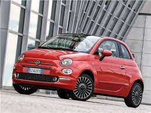
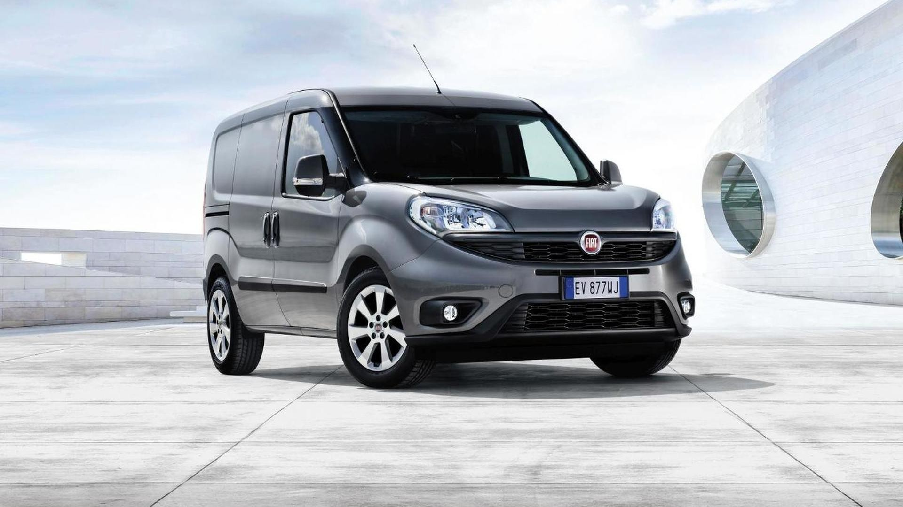
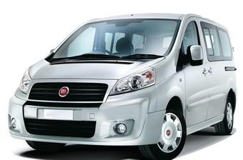
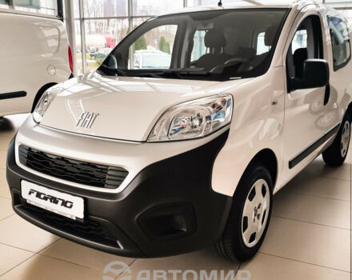
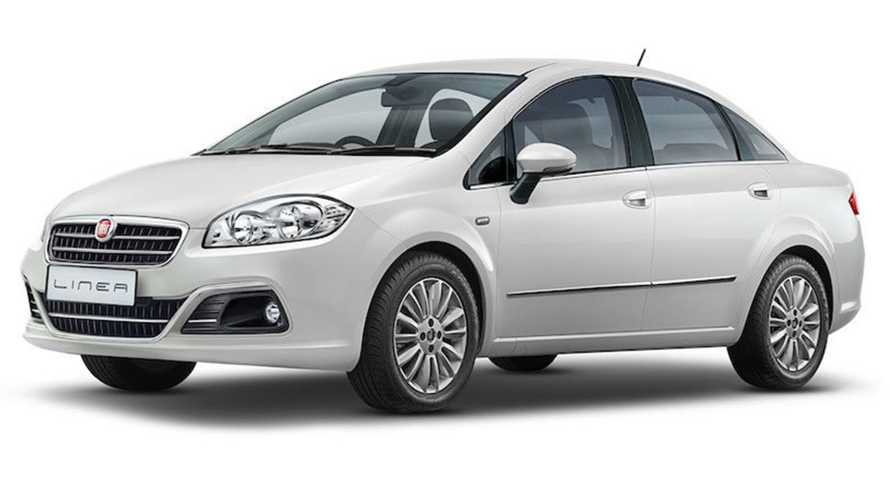
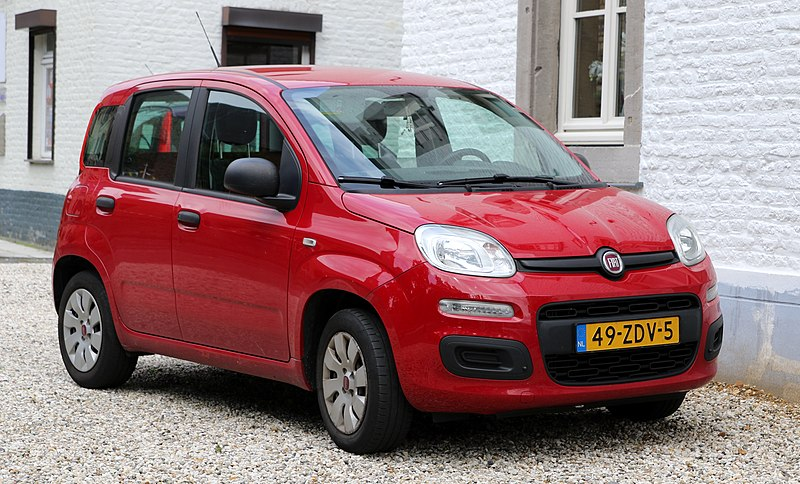
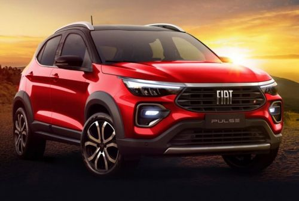
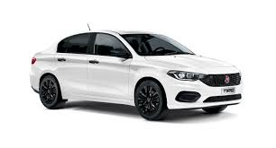
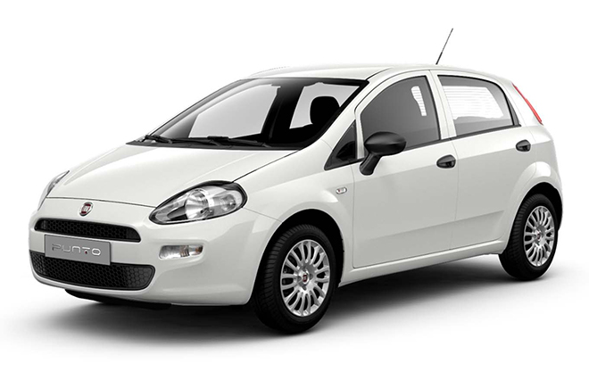

Home work 5

Fiat 500
Міський автомобіль, який випускався з 2007 року

Fiat Doblo
Пятивмісний грузопасажирний компакт-мінівен, випускається з 2000 року

Fiat Ducato
Мікроавтобус, який випускається компанією Fiat з 1981 року

Fiat Fiorino
компактний фургон, який представляє італійський автовиробник Fiat з 1977 року.

Fiat Linea
модель автомобіля італійського автовиробника Fiat, яка була розроблена у співпраці з турецькою компанією Tofas.

Fiat Panda
Міський автомобіль італійської фірми Fiat. У 2004 році був названий найкращим автомобілем року в Європі.

Fiat Pulse
Новий Fiat Pulse представляє собою «внедорожную» модифікацію хетчбека Argo.

Fiat Tipo
Cімейства компактних автомобілів італійської компанії Fiat.

Fiat Punto
Компактні хетчбеки, що виробляються компанією Fiat з 1993 і прийшли на заміну моделі Fiat Uno.